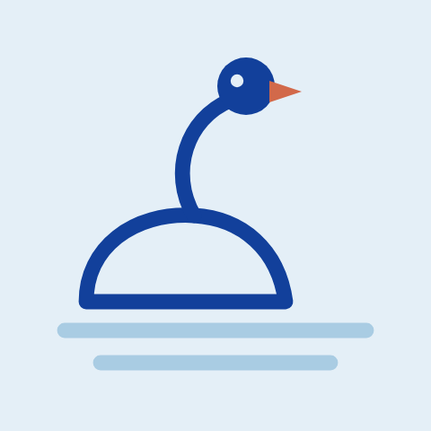

Build a collaborative transnational network
Establish a consortium of diverse organisations across seven EU countries to share knowledge and best practices in table tennis health programmes for NDDs.
The Project
A 34-month Erasmus+ Sport project promoting healthy, active lifestyles for people with neurodegenerative diseases — mainly Parkinson's and Alzheimer's — through table tennis.
The Spin for Well-being: Active lifestyles through therapeutic table tennis for individuals with Neurodegenerative diseases (acronym: SWAN) is a 34-month Erasmus+ Sport project focused on promoting healthy, active lifestyles for people with neurodegenerative diseases (NDDs), mainly Parkinson's and Alzheimer's, through table tennis.
The ultimate aim is to build a network of stakeholders interested in the therapeutic aspects of table tennis for NDD care, and to make it easier for others to adopt and expand similar programmes in their own settings — care homes, sport organisations and local communities.

Just as a swan molts its feathers and grows new ones, our goal is to help individuals with NDDs form new neural connections through physical activity.
Objectives
Four objectives, worked in sequence across the project's 34 months.
Establish a consortium of diverse organisations across seven EU countries to share knowledge and best practices in table tennis health programmes for NDDs.
Create and implement a training curriculum that equips stakeholders with both the theoretical and practical tools needed to run effective table tennis interventions.
Design and evaluate targeted table tennis curriculums for people with Alzheimer's and Parkinson's, to improve their physical, cognitive and social well-being.
Share our findings widely by participating in key events and creating informative materials that drive change at the intersection of sport and NDD care.
Key activities
We conduct comprehensive research to gather insights and identify successful table tennis for health initiatives. By collecting evidence from literature and real-world best practices, our consortium lays the groundwork for innovative NDD care programmes.
Our project experts design adapted table tennis curriculums tailored for individuals with NDDs. These curriculums, implemented in selected partner countries (Greece, Bulgaria, Spain), are evaluated for their impact on physical, cognitive and social well-being.
We develop a training curriculum that blends theoretical knowledge of NDDs with practical table tennis methodology. Through an online course, we equip trainers and coaches with the skills to deliver effective table tennis for health programmes.
We raise awareness about the benefits of table tennis in NDD care through structured dissemination. Among those activities, we create an informative guidebook and take part in the World Table Tennis for Health Festivals in 2025 and 2026.
Target groups
SWAN engages a diverse community of stakeholders by fostering collaboration, raising awareness, and empowering individuals and organisations to integrate table tennis into NDD care.
Particularly those with Alzheimer's and Parkinson's, who benefit directly from tailored table tennis interventions.
Including nursing homes, health centres and rehabilitation facilities that support people with NDDs.
Coaches, instructors and caregivers, equipped with theoretical and practical training to deliver the interventions.
Sports clubs and federations that can integrate table tennis into their health programmes.
Stakeholders who play a key role in supporting and advocating for individuals with NDDs.
The wider community, whose awareness of the benefits of table tennis in NDD care helps the work spread.
EU funding
SWAN is funded by the European Union under the Erasmus+ programme. It runs as a Cooperation Partnership in the field of sport from 1 December 2024 to 30 September 2027, under Grant Agreement No. 101185590 within the call ERASMUS-SPORT-2024-SCP.
Project: 101185590 — SWAN — ERASMUS-SPORT-2024-SCP
Follow the work
Research reports, curriculums and training materials go up on the Resources page the moment they clear review.